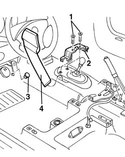
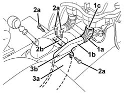

5010B47 side air duct to rear seat(one), lh or rh - r r
- Path
- Procedures > 50 AUXILIARY UNITS > 5010 CLIMATE CONTROL - MISCELLANEOUS > 5010B heating/ventilation air pipes and ducts > 5010B47 side air duct to rear seat(one), lh or rh - r r
- Kind
- repair procedure (removal / refitting; the operation number is the code)
- Applies to
- all engines; all production periods
- Interactive page
- https://sloeber94.github.io/elrnDB-a156/en/#/3238252
Applies to: all engines; all production periods
 Removing
Removing
 Refitting
Refitting7045A10 l/h or r/h front seat (one) - r+r
7040A65 passenger compartment box lock , one , r r (left and right sides)
5040D22 control (one) of air conditioner control support - arrange
2125C24 gear lever knob - r + r
7040A60 under facia trim - r+r
3380A44 handbrake/linkage protection - r+r
7040L28 tunnel switch panel - r r
5010C44 air diffuser to rear seat - r+r
1. Unscrew the bolts
2. Remove the bracket.
3. For the driver's side only, release the accelerator pedal buffer using the special tool.
 | Name | Country |
|---|---|---|
3 | Scraper blade | 1.823.014.000 |
4. Lift up the carpet in the area of the gear lever and extract the air duct.

Applies to: all engines; all production periods
Refitting
RemovingCheck that the duct is not damaged.
Lift up the carpet in the area of the gear lever and fit the air duct.
For the driver's side only, fit the accelerator pedal buffer.
Position the bracket.
Tighten the screws.
Check that the air seal is guaranteed when the duct is fitted.
5010C44 air diffuser to rear seat - r+r
7040L28 tunnel switch panel - r r
3380A44 handbrake/linkage protection - r+r
7040A60 under facia trim - r+r
2125C24 gear lever knob - r + r
5040D22 control (one) of air conditioner control support - arrange
7040A65 passenger compartment box lock , one , r r (left and right sides)
7045A10 l/h or r/h front seat (one) - r+r
Check component operation after refitting.
Applies to: all engines; production: da 03/02 a 09/03, da 10/03
Removing
Refitting7045A10 l/h or r/h front seat (one) - r+r
3380A44 handbrake/linkage protection - r+r
7040L22 REAR TRIM on TUNNEL -R.R.
5010B46 central air duct to rear seat - arrange
5010C44 air diffuser to rear seat - r+r
1. Remove the flexible duct (1a) releasing it from the duct (1b) and from the climate control casing connection (1c).
2. Undo the bolts (2a) and remove the bracket (2b).
3. Lift up the carpet (3a) slightly and extract the duct (3b).

Applies to: all engines; production: da 03/02 a 09/03, da 10/03
Refitting
RemovingCheck that the side air duct to the rear seats is not damaged.
Lift up the carpet slightly and fit the duct.
Fit the bracket and tighten the bolts.
Fit the flexible duct in place.
5010C44 air diffuser to rear seat - r+r
5010B46 central air duct to rear seat - arrange
7040L22 REAR TRIM on TUNNEL -R.R.
Topics linked from this page (13)
- 2125C24 gear lever knob - r + r
- 3380A44 handbrake/linkage protection - r+r
- 5010B46 central air duct to rear seat - arrange
- 5010C44 air diffuser to rear seat - r+r
- 5040D22 control (one) of air conditioner control support - arrange
- 5570T80 car radio unit - r+r
- 7040A60 under facia trim - r+r
- 7040A65 passenger compartment box lock , one , r r
- 7040L20 tunnel trim - r r
- 7040L22 REAR TRIM on TUNNEL -R.R.
- 7040L28 tunnel switch panel - r r
- 7045A10 l/h or r/h front seat (one) - r+r
- 7065C42 ashtray (one) r+r